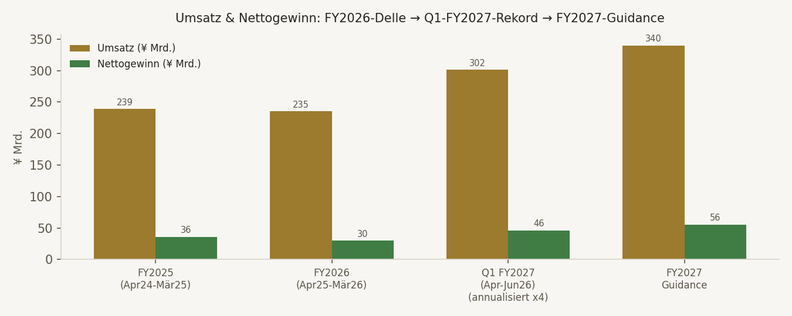
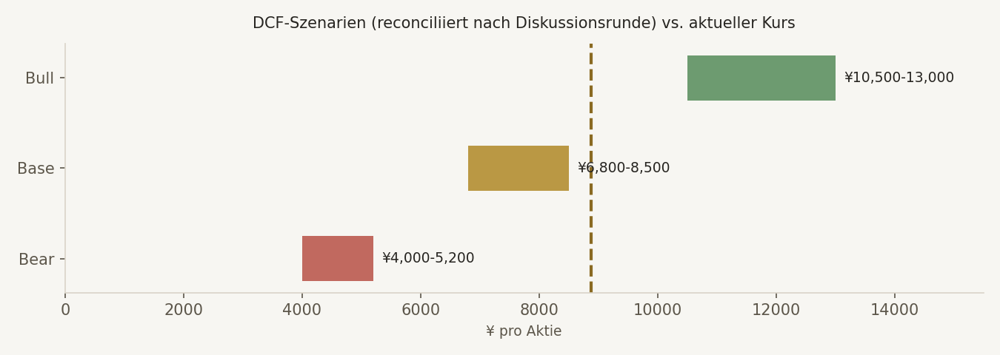

Das operative Geschäft. Kokusai ist Weltmarktführer (~70-80% Marktanteil) bei Batch-ALD-Systemen — der Kernprozess-Ausrüstung für DRAM-, 3D-NAND- und GAA-Logic-Fertigung. FY2026 (März-Bilanz) war ein China-getriebenes Abwärtsjahr (Umsatz -1,6%, Gewinn -16,4%). Q1 FY2027 (April-Juni 2026, primärquellenverifiziert) markiert den Bruch nach oben: Umsatz +45,6%, Adj. Op.-Ergebnis +59,3%, Nettogewinn +70,6% — Management hob die FY2027-Guidance daraufhin um 21% an.
Der Moat. Physikbasiert, nicht nur technologisch: Batch-Verarbeitung ist für Speicherhersteller aus Kostengründen Single-Wafer-Systemen (Domäne von ASM International) strukturell überlegen. Beide KIs bewerten den Moat unabhängig als STARK.
Der Streitpunkt. JJ kam in Runde 1 auf KAUFEN (5-7% Sizing, DCF-Base ¥9.500-11.000), Conan auf HOLD (1-1,5%, DCF-Base ¥5.500-7.000) — eine fast doppelte Differenz. Die Diskussionsrunde (Seite 5) legte die Ursache offen: JJs Modell implizierte eine FCF-Marge von 18-25%, tatsächlich liegt sie bei nur 13,5% (FY2026) — deutlich unter der 20%-TMR-Elite-Schwelle.
Das konvergierte Ergebnis. Nach der Diskussion landen beide KIs bei HOLD/BEOBACHTEN mit einer Nachkauf-Zone ¥6.500-7.800 — der aktuelle Kurs (¥8.884) liegt am oberen Rand der reconciliierten Base-Case-Spanne. Kein Kauf jetzt, aber ein klar definierter Beobachtungspunkt.
BEOBACHTEN
Nachkauf-Zone ¥6.500-7.800, Sizing max. 3-4%
HOLD/WATCHLIST BUY
Von KAUFEN auf HOLD revidiert, akzeptiert FCF-Margen-Einwand · Sizing 1,0-2,0%
BUY/ACCUMULATE <¥7.800
Von striktem HOLD leicht nach oben, Sizing 1,5-4% je Kurs
Kokusai Electric ist ein Qualitätsunternehmen mit einem echten, physikbasierten Moat (~70-80% Batch-ALD-Marktanteil) und einer gerade durchlaufenen, primärquellenbestätigten Gewinn-Reacceleration nach einer China-getriebenen Schwächephase. Aber: der zentrale Vorbehalt ist konsistent über beide KIs UND Aegis' eigene Sanity-Rechnung (Seite 6) — die FCF-Marge (13,5%) liegt noch klar unter der TMR-Elite-Schwelle (20%), und der aktuelle Kurs preist bereits einen erheblichen Teil der erwarteten Erholung ein. Das rechtfertigt eine Watchlist-Aufnahme mit klarer Nachkauf-Zone, keinen sofortigen Kauf.
Physikbasierter Moat (~70-80% Batch-ALD-Marktanteil), Netto-Cash-Bilanz, primärquellenverifizierte Gewinn-Reacceleration (Q1 FY2027 +70,6% Nettogewinn), Guidance um 21% angehoben.
FCF-Marge (13,5%) verfehlt die 20%-TMR-Elite-Schwelle deutlich. Aktueller Kurs liegt am oberen Rand der reconciliierten DCF-Base-Spanne (¥6.800-8.500) — begrenzte Sicherheitsmarge.
Q2 FY2027-Zahlen (~Anfang November 2026): normalisiert sich die FCF-Marge Richtung 15-18%? Bleibt der Auftragseingang nach der Q1-Spitze stark? China-Exportkontrollen.
BEOBACHTEN, keine Order jetzt. Nachkauf-Zone ¥6.500-7.800: Starter 1,5-2,0%, unter ¥7.000 bis 2,5%. Maximum vor FCF-Bestätigung: 3-4%.
| Kriterium | Schwelle | Ist-Wert | Status |
|---|---|---|---|
| ROIC | >20% | 22,25% aktuell / 14,53% FY2026 / 18,19% FY2025 | 🟡 Grenzfall — aktuell erfüllt, FY2026 verfehlt |
| FCF-Marge | ≥20% | ~13,5% FY2026, Q1 FY2027 niedriger (Working-Capital-Aufbau) | ❌ Zentraler K-Kritikpunkt beider KIs |
| Op. Leverage | Ja/Nein | Ja — Q1 FY2027 Umsatz +45,6%, Adj. Op. +59,3% (Gewinn wächst schneller als Umsatz) | ✅ Erfüllt |
| Piotroski F-Score | ≥7 | ~5/9 (Conans konservative Berechnung FY2026 vs. FY2025) | 🟡 Grenzfall |
| EPS-CAGR | ≥12% | Historisch zyklisch/volatil; FY2027-Guidance impliziert +84% NI-Wachstum | 🟡 Forward erfüllt, historisch nicht belastbar |
| Net Debt/EBITDA | <2,0x | -0,10 (Netto-Cash-Position) | ✅ Erfüllt, sehr stark |
| Equity Ratio | Solide | 60,6% | ✅ Erfüllt |
DNA-Urteil: K 2,5-3/5 (Grenzfall) — die Hauptlücke ist die FCF-Marge, nicht ROIC oder Wachstum. Bilanz und Marktstellung erfüllen die E-Kriterien klar. Going-Concern: bestanden, kein Problem (Cash ¥56,97 Mrd., durchgehend positiver Operating Cashflow).
Cost Advantage (sehr stark): Batch-Verarbeitung strukturell kostengünstiger für Speicherhersteller (DRAM/3D-NAND) als Single-Wafer-Systeme — physikbasiert (Diffusionszeitkonstanten bei High-Aspect-Ratio-Strukturen). Switching Costs (hoch): "Process of Record"-Qualifizierung bei allen großen Speicherherstellern. Intangible Assets (hoch): ~70-80% Weltmarktanteil (unternehmenseigene Schätzung). Network Effects (niedrig): nicht anwendbar. Haupt-Konkurrent ASM International (~55% Single-Wafer-ALD-Anteil) besetzt eine benachbarte, sich ergänzende Nische.
CEO Kazunori Tsukada (seit April 2025). Positiv: Guidance nach Q1 schnell und deutlich angehoben (+21%), Dividende erhöht (¥47→¥65, Payout ~25,2%), Buyback abgeschlossen (565.900 Aktien, ¥5,3 Mrd.), saubere Governance nach KKR-Exit (kein Overhang mehr), Mitarbeiterbeteiligungsprogramm. Fragezeichen: kurze Publikums-Historie (IPO erst Okt. 2023), CEO-Amtszeit noch jung.
Erste WebSearch-Treffer zeigten sowohl "Q1-Umsatz -21%/Op.-Gewinn -44%" als auch "Rekord-Q1" — direkt widersprüchlich. Primärquellen-Check (Kokusai IR/TDnet) klärte auf: die negative Meldung bezog sich auf einen älteren Berichtszeitraum (vermutlich Q1 FY2026, ein Jahr zuvor). Das tatsächlich jüngste Quartal (Q1 FY2027, April-Juni 2026) war ein echtes, primärquellenverifiziertes Rekordquartal.

| Periode | Umsatz | Adj. Op.-Ergebnis | Nettogewinn | Kommentar |
|---|---|---|---|---|
| FY2026 (Apr.25-März 26, abgeschlossen) | ¥235,08 Mrd. (-1,6%) | ¥47,60 Mrd. | ¥30,10 Mrd. (-16,4%) | China-Nachfrageschwäche |
| Q1 FY2027 (Apr.-Jun. 26, jüngstes Quartal) | ¥75,41 Mrd. (+45,6%) | ¥17,37 Mrd. (+59,3%) | ¥11,56 Mrd. (+70,6%) | Rekordquartal, Aufträge ~¥140 Mrd. über Plan |
| FY2027-Guidance (nach Q1 um 21% angehoben) | ¥340 Mrd. | ¥86,0 Mrd. | ¥55,5 Mrd. | EPS ¥237,63 (adj. ¥256,90), Dividende ¥47→¥65 |
Segment-Details Q1 FY2027: DRAM +158% YoY, Logic/Foundry +82% YoY, NAND -34% YoY aber +84% QoQ (Stabilisierung). Non-China-Umsatz +75% YoY, China -3% YoY aber +18% QoQ.
| Bein | Bear | Base | Bull | Rating | Sizing |
|---|---|---|---|---|---|
| JJ (Runde 1) | ¥6.000-7.500 | ¥9.500-11.000 | ¥12.500-14.000 | KAUFEN (STRONG BUY) | 5-7% |
| Conan (Runde 1) | ¥3.200-4.200 | ¥5.500-7.000 | ¥9.800-11.800 | HOLD/WATCHLIST BUY | 1,0-1,5% |
Ursache der Divergenz (von JJ selbst identifiziert nach Konfrontation mit Conans Zahlen): JJs Base Case implizierte FCF-Margen von 18-25% — deutlich über der tatsächlichen 13,5% (FY2026). Das war der überwiegende Treiber der ~70-100%igen Differenz, nicht WACC/Terminal-Growth (JJ: WACC 8,5-9%, g 2-2,5%; Conan: WACC 9,5-10%, g ~3% — diese Unterschiede allein hätten nur 15-30% Abweichung erklärt).
JJ revidiert: stimmt Conans FCF-Marge-Einwand vollständig zu, revidiert Rating auf HOLD/WATCHLIST BUY, Sizing auf 1,0-2,0%, übernimmt Conans Kaufzone ¥6.500-7.200. Conan revidiert (moderat nach oben): Q1-Reacceleration rechtfertigt eine positive Neubewertung — neue DCF-Spanne Bear ¥4.000-5.200 · Base ¥6.800-8.500 · Bull ¥10.500-13.000. Rating von striktem HOLD zu "vorsichtiger BUY/ACCUMULATE unter ~¥7.800, HOLD oberhalb ~¥8.500-9.000". Sizing: 1,5-2,5% Starter, Maximum vor weiterer Bestätigung 3-4% (nicht JJs ursprüngliche 5-7%).

| Faktor | Kokusai Electric | ASM International |
|---|---|---|
| Kerngebiet | Batch-ALD/Vertical-Furnace-Deposition (Memory-Fokus) | Single-Wafer-ALD, Epi (Leading-Edge-Logic-Fokus) |
| Marktanteil (eigene Nische) | ~70-80% Batch-ALD-kompatible Deposition (CY2025, unternehmenseigene Schätzung) | ~55% Single-Wafer-ALD |
| Bruttomarge | 40,7% (Q1 FY2027) | ~51,8-51,9% (2025/Q2 2026) |
| Operative Marge | 17,8% (FY2026) → Guidance Adj. ~25,3% (FY2027) | ~29,6-33,0% |
| Bewertung | ~59,7x trailing / ~32,6-37x auf FY2027-Guidance | ~37x trailing, Marktkap. ~€39,9 Mrd. (18.09.2026) |
Peer-Fazit (Conan): Kokusai hat die spannendere Re-Rating-/Recovery-Komponente und eine starke Memory-/Batch-Nische. ASM ist qualitativ glatter (höhere Brutto-/Op.-Marge, längere Kapitalmarkt-Historie). Kokusai sollte nicht dauerhaft mit einem großen Premium zu ASM handeln, solange FCF-Marge und Zyklusqualität nicht mithalten.
| EPS-Basis | EPS | Impliziertes KGV |
|---|---|---|
| TTM Nettogewinn (~¥34,88 Mrd. / ~233,4 Mio. Aktien) | ~¥149-150 | ~59x |
| FY2027-Guidance, IFRS-EPS | ¥237,63 | ~37,4x |
| FY2027-Guidance, Adj. EPS | ¥256,90 | ~34,6x |
| Forward-KGV laut Aggregator | (impliziert ~¥272,4) | 32,61x |
Erklärung: Der Sprung von trailing 59,66x auf forward 32,61x ist operativ erklärbar (FY2027-Gewinnsprung), kein Datenfehler. Aber: das Aggregator-Forward-KGV liegt sogar leicht UNTER dem KGV auf Kokusais eigener FY2027-Guidance — impliziert entweder Street-Schätzungen oberhalb der aktuellen Guidance oder bereits einen Blick auf FY2028. Kein konservativer Wert.
Grobe Kapitalisierung der FY2027-Guidance (Adj. EPS ¥256,90) mit einem qualitätsadjustierten Multiple von ~26,5x (zwischen "zyklisch-konservativ" 20x und "Qualitäts-Moat" 35x) ergibt ≈ ¥6.808 — landet fast exakt in Conans revidierter unterer Base-Case-Zone. Beim aktuellen Forward-KGV von 32,61x preist der Markt bereits die obere Hälfte einer "Qualitäts-Multiple"-Bewertung ein, nicht die konservative Seite. Bestätigt die konvergierte Einschätzung: begrenzte Sicherheitsmarge beim aktuellen Kurs.
| Termin | Was beobachten | Positives Signal | Warnsignal |
|---|---|---|---|
| ~Anfang Nov. 2026 | Q2 FY2027-Zahlen | FCF-Marge normalisiert Richtung 15-18%, Aufträge bleiben stark | FCF-Marge verschlechtert sich weiter, Auftragseingang bricht ein |
| Laufend | China-Exportkontrollen | Keine neuen Verschärfungen mit Kokusai-Bezug | Neue Restriktionen, die Kokusai direkt betreffen |
| Laufend | NAND-Segment | NAND-Erholung setzt sich fort (Q1: +84% QoQ) | NAND-Schwäche erweist sich als struktureller statt zyklischer Rückgang |
Kokusai Electric ist ein Qualitätsunternehmen mit echtem, physikbasiertem Moat und einer primärquellenbestätigten Gewinn-Reacceleration — aber kein Kauf zum aktuellen Kurs. Nach einer echten Rating-Divergenz zwischen JJ (KAUFEN) und Conan (HOLD) in Runde 1 zeigte die Diskussionsrunde: die implizite FCF-Margen-Annahme war der Haupttreiber der Differenz, nicht WACC oder Terminal-Growth. Beide KIs konvergieren nach Diskussion auf HOLD/BEOBACHTEN, gestützt durch Aegis' eigene Sanity-Rechnung. Watchlist-Aufnahme (Profi), keine Kaufempfehlung zum aktuellen Kurs.
Bei ¥7.000-7.800: Starter 1,5-2,0%.
Unter ¥7.000: bis 2,5%.
Aufstockung auf 3-4%: erst nach Bestätigung der FCF-Margen-Normalisierung (Q2 FY2027-Zahlen, ~Anfang November 2026).
Über ¥9.000: viel Recovery bereits eingepreist, eher HOLD ohne neue Guidance-Anhebung.
🟡 MITTEL
Marktanteilszahlen unternehmenseigene Schätzung statt neutral verifiziert, Piotroski nur grob geschätzt, kurze Publikums-Historie seit IPO Okt. 2023.
Q2 FY2027-Zahlen
~Anfang November 2026 — insbesondere FCF-Margen-Normalisierung und Auftragseingang.